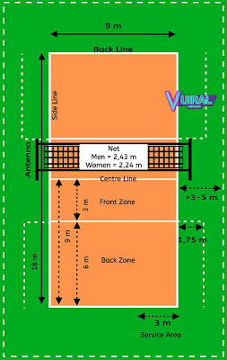

Haryadideni.blogspot: OLAHRAGA PENDIDIKAN
- PENDIDIKAN OLAHRAGA DAN REKREASI - Kemdikbud
Olahraga Pendidikan adalah pendidikan jasmani dan olahraga yang dilaksanakan sebagai bagian proses pendidikan yang teratur dan berkelanjutan untuk memperoleh pengetahuan, kepribadian, keterampilan, kesehatan, dan kebugaran jasmani - Rpp Pendidikan Jasmani Olahraga dan Kesehatan / PJOK ...
Perbedaan yang kedua antara olahraga dan pendidikan jasmani adalah terletak pada orientasi yang diterapkan oleh dua istilah tersebut. Adapun mengenai orientasi dari olahraga adalah berkaitan dengan program latihan seperti misalnya program latihan bulu tangkis untuk pemula yang sebelumnya juga telah kami bahas khusus untuk anda.. Seorang pemain atau atlet tertentu harus melakukan serangkaian ... - makalah olahraga pendidikan - SlideShare
Sehingga Pendidikan Olahraga dan Rekreasi proses pembelajarannya secara langsung juga meningkatkan pertumbuhan dan perkembangan seluruh ranah yaitu psikomotor, kogni f dan afek f se ap peserta didik. Kesan yang di mbulkan dari Pendidikan Olahraga dan Rekreasi erat kaitannya dengan hal-hal yang menyenangkan dan - 5 Universitas Dengan Fakultas Olahraga Terbaik di ...
Pendidikan.Co.Id – Pada kesempatan ini kita akan membahas megnenai Olahraga, penjelasan pada artikel ini juga dilengkapi dengan beberapa point penting seperti pengertian olahraga menurut para ahli, tujuan, manfaat dan jenis olahraga, penjelasan selengkapnya sebagai berikut : - Haryadideni.blogspot: OLAHRAGA PENDIDIKAN
Olahraga pendidikan pada jalur pendidikan nonformal dapat dilaksanakan secara terstruktur dan berjenjang. Olahraga pendidikan sebagaimana dimaksud pada ayat (4) dan ayat (5) dibimbing oleh guru/dosen olahraga dan dapat dibantu oleh tenaga keolahragaan yang disiapkan oleh setiap satuan pendidikan. - (DOC) FILSAFAT PENDIDIKAN JASMANI DAN OLAHRAGA | Gigih ...
judul ”Strategi Pembelajaran Pendidikan Jasmani Olahraga dan Kesehatan Selama Pandemi Covid-19” selesai disusun. Buku ini merupakan karya anak bangsa, yang ditulis secara kolaboratif oleh para ... - Tujuan Pendidikan Jasmani Olahraga dan Kesehatan ...
Di Indonesia banyak Universitas yang membuka Fakultas Olahraga di dalamnya terdapat berbagai jurusan diantara, Jurusan Pendidikan Kepelatihan Olahraga, Jurusan Ilmu Olahraga, Jurusan Pendidikan Jasmani Kesehatan dan Rekreasi, dan Jurusan PGSD Penjas. Lalu Universitas mana saja, okey mari kita lihat. 1. Universitas Pendidikan Indonesia (UPI) Universitas Pendidikan Indonesia merupakan ... - Makalah Olahraga dan Pendidikan Jasmani ~ Makalah
Lutan, Rusli. (1999). Krisis Global Pendidikan Jamani; Reinterpretasi Hasil Kongres World Summit On Physical Education dan Kesan Tentang Keolahragaan Jerman. Fakultas Pendidikan Olahraga dan Kesehatan: Universitas Pendidikan Indonesia. _____ (2001). Olahraga dan Etika Fair Play. Direktorat Jendral Olahraga: Departemen Pendidikan Indonesia. - Pengertian Olahraga, Tujuan, Manfaat, Jenis dan Menurut Ahli
Judul Skripsi Pendidikan Olahraga - Olahraga adalah proses sistematik yang berupa segala kegiatan atau usaha yang dapat mendorong mengembangkan, dan membina potensi-potensi jasmaniah dan rohaniah seseorang sebagai perorangan atau anggota masyarakat dalam bentuk permainan, perlombaan/ pertandingan, dan kegiatan jasmani yang intensif untuk memperoleh rekreasi, kemenangan, dan prestasi puncak ... - PENDIDIKAN JASMANI DAN OLAHRAGA: PENGERTIAN PENDIDIKAN ...
Pendidikan jasmani olahraga dan kesehatan mengajarkan kebiasaan baik bagi para siswa supaya dapat tumbuh dan berkembang dengan baik. Dengan belajar mengenai olahraga, siswa akan menjadi lebih sehat sehingga akan tumbuh menjadi manusia dengan fisik yang sehat, bugar, dan kuat. Selain itu, perkembangan psikis anak juga akan menjadi lebih baik ...

Haryadideni.blogspot
Seputar Artikel Olahraga, Berita Sepakbola
Sabtu, 26 Oktober 2013
OLAHRAGA PENDIDIKAN
Olahraga.it Olahraga Pendidikan ialah Ketika seseorang atau sekelompok orang melakukan olahraga dengan tujuan untuk pendidikan maka semua aktivitas gerak diarahkan untuk memenuhi tuntunan tujuan-tujuan pendidikan. Oleh karena itu, olahraga yang bertujan untuk pendidikan ini idenitik dengan aktivitas pendidikan jasmani yaitu dengan media cabang olahraga sebagai pendidikan.Olahraga pendidikan biasanya kita temukan disekolah-sekolah dengan implikasinya, diharapkan dalam jangka yang pendek, paling tidak diarahkan para siswa memiliki kebugaran jasmani, kesenangan melakukan aktifitas fisik dan olahraga dan terbentuklah manusia yang sehat secara jasmani.
Diposkan oleh Deni haryadi di 17.33.00 Kirimkan Ini lewat Email BlogThis! Berbagi ke Twitter Berbagi ke Facebook Bagikan ke Pinterest Label: olahraga , Pendidikan
Tidak ada komentar:
Posting Komentar
Posting Lebih Baru Posting Lama Beranda Langganan: Posting Komentar (Atom)
Di coba
Masker Custom Al kadefi
Popular Posts
Pengertian Dribbling Dalam Sepak Bola CARA BERMAIN SEPAKBOLA DENGAN FORMASI 4-3-3 Teknik Dasar Permainan Sepakbola Peraturan Permainan Sepakbola ( Laws Of The Game ) SEJARAH OLAHRAGA DI INDONESIACategories
Bisnis Bola Basket Bola Tangan Bola voli Esport Fifa Wolrd cup Galeri Foto Gizi atlet Kondisi Fisik olahraga olahraga ekstrem Olahraga rekreasi Panahan Pendidikan Sejarah sepakbola Sepakbola wanita seputar inter timnas IndonesiaBlog Archive
► 2021 (22) ► Februari (11) ► Januari (11) ► 2020 (1) ► Mei (1) ► 2015 (2) ► Maret (2) ► 2014 (38) ► April (15) ► Maret (22) ► Januari (1) ▼ 2013 (34) ► November (3) ▼ Oktober (22) FORMASI DAN SEJARAH STRATEGI SEPAKBOLA PENGERTIAN SEPAKBOLA PENGERTIAN OLAHRAGA OLAHRAGA REHABILITASI (KESEHATAN) OLAHRAGA PRESTASI OLAHRAGA REKREASI OLAHRAGA PENDIDIKAN FIFA WORLD CUP 2014 : HARUSKAH ADA PERATURAN TIME ... INDAHNYA BERMAIN SEPAKBOLA.......! Timnas INDONESIA U-19 : Yang Peduli Kaum Buruh Ata... EVAN DIMAS TITISAN XAVI HERNANDEZ THANK YOU MASSIMO MORATTI SEJARAH SEPAKBOLA MODERN SEJARAH SEPAKBOLA KUNO RITUAL PEMAIN SEPAKBOLA SEBELUM BERTANDING KUNCI SUKSES TIMNAS INDONESIA USIA 19 PELATIH TERSUKSES YANG DIMILIKI INTER ATURAN DAN KEDEWASAAN SUPORTER INDONESIA PEMAIN BINTANG MASA DEPAN INTER Foto pemain berbakat INTER Melibatkan Pemain dan Orang Tua dalam Pembinaan Us... Saatnya SSB maju! ► September (9)Blogger news
Total Tayangan Halaman
Blogroll
Postingan Populer
Teknik Dasar Permainan Sepakbola Olahraga.it : Prestasi sepakbola akan diperoleh jika menguasi teknik dasar yang berkualitas . Lalu apa teknik dasar itu......?... OLAHRAGA REKREASI Olahraga.it Olahraga rekreasi ialah olahraga yang mengarah kepada aktivitas gerak yang bertujuan untuk kesenangan dan kegembira... Pengertian Dribbling Dalam Sepak Bola Haryadideni.blogspot - Salah satu teknik dasar yang memiliki kedudukan penting dalam permainan sepakbola adalah teknik dribbling pada dasar... Peraturan Permainan Sepakbola ( Laws Of The Game ) Olahraga.it Dalam sebuah pertandingan atau permainan tentunya ada peraturan yang harus ditaati atau dijalankan, begitu juga dalam pe... OLAHRAGA PRESTASI Olahraga.it Olahraga Prestasi adalah kegiatan olahraga yang dilakukan dan dikelola secara profesional dengan tujuan untuk memperole... PERATURAN PERMAINAN OLAHRAGA BOLA BASKET Catatan olahraga Dalam setiap permaian olahraga tentu ada peraturannya sendiri, setelah sebelumnya membahas tentang Permainan Olahr... Pengertian Pelatih (Coach) Pelatih adalah seorang yang profesional yang tugasnya membantu atlet atau team dalam mencapai prestasi yang tinggi. Pelatih se... Gambar tema oleh fpm . Diberdayakan oleh Blogger .